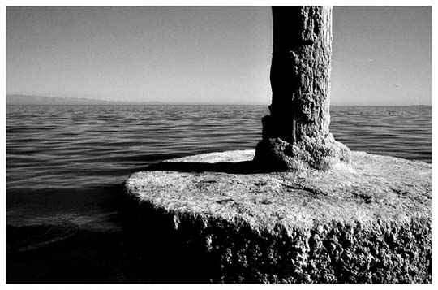

Jeff T. Alu
black-and-white fine art photography
Jeff T. Alu
black-and-white fine art photography
Jeff Alu has recently been photographing the deserts of Southern California. He writes that he's "constantly searching for his real home by journeying out into the desert," and that he's "fairly sure he can find a clue to his existance out there somewhere." He uses a Kodak DC-280 digital camera, converts his images to black-and-white in Photoshop, then relies heavily on burn and dodge brushes to add selective contrast, generally making the dark areas darker and the light areas lighter. This process, he says, is most important to his art. His photos are bereft of the human figure, but are textured and structured to bring out the drama of the forms and landscapes he explores.
Post: Salton Sea, Southern CA
 |